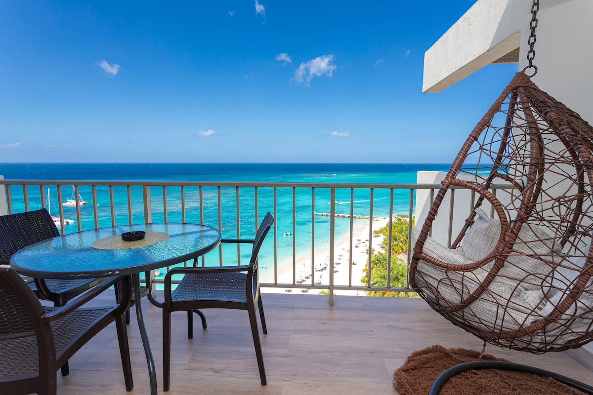

Stay one · Montego Bay
Ocean View Penthouse
Hip Strip · Thursday night, Friday morning · A top-floor stay across from Doctor’s Cave.
A king suite with a private balcony that opens onto the bay: woven swing chair, glass-top table, the Hip Strip thinned to palms and turquoise. Inside — tufted leather headboard, teal accents, pendant lights, sliding doors that keep the sea in the room.
Closest stay to the airport. We arrive, we stand on the balcony, we walk to dinner on Gloucester.

Ocean View Penthouse · the balcony
Private terrace above the Hip Strip — Doctor’s Cave as a pale ribbon, boats on turquoise water.
This is the first thing we see when we open the door: high enough that the Strip softens, close enough that the Caribbean fills the afternoon. One night here before we go west. The balcony is where the trip begins.